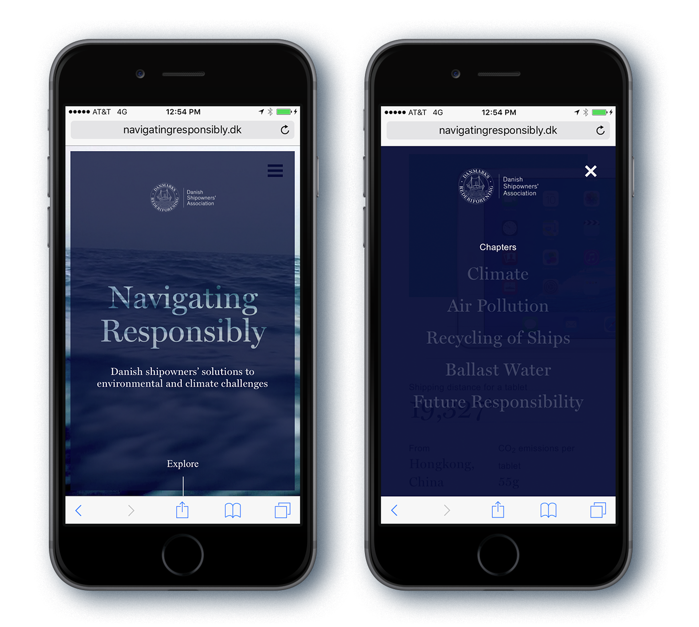

In today’s Internet Age where everything is shareable and potentially viral, us designers constantly come across new things that inspire us to push past boundaries in our work. Yet, how do you make sure that your project is not just visually fresh but actually works for your target user? How do you get a user to embrace new UX and UI patterns without sacrificing the experience and functionality?
Here are four questions to ask yourself before you follow a trend:
1. Is it right for the project?
Just because we see it everywhere – and even if it becomes a common UX pattern – that doesn’t mean it’s right for the project. A perfect example is the controversial hamburger menu. It’s commonplace and creates an aesthetically pleasing interface. Yet, it can hamper discoverability and leave the user feeling alienated. By fully understanding conversion goals and breadth of content, it will become clear whether following this trend is appropriate.
The Danish Shipowners Association’s Navigating Responsibility , for example, uses a hamburger nav because their experience is exploratory. Users primarily navigate their content by scrolling down the page, so having the navigation constantly visible is not needed. They’ve also very cleverly adapted this common pattern to complement the interaction in their desktop experience where screen real estate is not at a premium.

Navigating Responsibility Desktop Site

Navigating Responsibility Mobile Site
2. How will this affect metrics and performance?
Metrics and performance indicators are table stakes for all clients, just as page load time and page weights are important to the user. Parallax scrolling is a great example of how a brilliant storytelling tool, which used appropriately on sites like The Boat, may negatively impact SEO, make for a poor user experience (especially for mobile users) with long page load times, and even cause motion sickness ! A deep understanding of what devices will be used most, type and length of content, as well as the how metrics may be impacted will help you decide what’s right for the experience you are designing.
The Boat Desktop Site
3. Has my user encountered this trend before?
The keyword here is MY user. Of course you’ve seen this pattern and your colleagues have too, otherwise it wouldn’t be considered a trend. But, if your target user hasn’t and you don’t provide refined microinteractions and implement appropriate error prevention, it’ll all be for naught. Creating strong user personas based on research and interviews will help you empathize with your user, get into their mindset, and fully understand the UX and UI patterns they are comfortable with. Before launching the site for R+Co , we worked hard to get to know the end user to determine their needs and understand what an enriching experience means to them. We implemented defined microinteractions to guide the user through the horizontal scroll. The result is an engaging, immersive visual experience, that echoes the attitude and style of these rule-bending hairstylists.
R+Co Desktop Site
4. What does my user ACTUALLY think of this?
The only way to find out if the trend in question will work for your user is to test and test and test. Testing at lower fidelities early and often provides validation and highlights issues. And interestingly enough, this can actually help you be a trendsetter as opposed to just a follower, since you’ll be in a pattern of finding newer and better solutions. Really allowing yourself to experience things through the user’s eyes can lead you to uncover a new, innovative solution or pattern. The recently refreshed Google Fonts is a lovely example of understanding and researching the users needs and developing a product that was, as you know, welcomed with open arms (I’m a huge fan!). Take a peek into their process.

Google Fonts Process Courtesy of Google Design
Ultimately, trends come and go, but if you keep the user’s goal as focal point, you’ll know best what to implement and you’ll be that much further in creating an effective and memorable experience.
Jerry Cao at UXPin says it best : “Trends are nothing more than additional tools in your designer toolbox. Always pick the right ones for the job.”